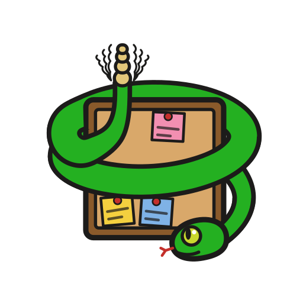

Receiver
Not listening.
Your station
Sent in the preamble of every frame, for the regulators. Without one, frames go out as ANONYMOUS. Each key below carries its own From-Call and From-Name.
Frames only use modes that decode at the SNR threshold. A post that doesn't fit in one frame goes out either as one longer frame or as fragments with that many extra blocks, in one seamless transmission. The radio is keyed by VOX.
Both kept on this device. The leading noise goes before each transmission, so the radio's VOX keys and squelches open before the first frame starts. Test sends exactly that noise at the output level, with no call sign and nothing to decode: start low and raise the level until the radio's ALC barely moves, and the leading noise until the radio keys before the noise ends.
Keys
Every post is signed with one of these keys, and keys held here count as trusted. Export secrets to keep them, and print the revocations of each key.
Add a key
Kept revocations
Revocations of keys you trust, your own included, kept forever. The station repeats them, so stations that missed one hear it later.
Storage
The browser may delete this station's data after a week without use. Install Rattlechan (Safari: File or Share, Add to Dock or Add to Home Screen; Chrome: Install) and export now and then.
Appearance
About

Copyright (C) 2026 by Ahmet Inan
Permission to use, copy, modify, and/or distribute this software for any purpose with or without fee is hereby granted.
Source code: github.com/aicodix/rattlechan
Disclaimer
Messages travel over the air and may arrive late, in part or not at all. Nothing is encrypted: anyone listening can read what is sent. You are responsible for operating within your radio licence and local regulations. Rattlechan is no replacement for official emergency services or their channels.
THE SOFTWARE IS PROVIDED "AS IS" AND THE AUTHOR DISCLAIMS ALL WARRANTIES WITH REGARD TO THIS SOFTWARE INCLUDING ALL IMPLIED WARRANTIES OF MERCHANTABILITY AND FITNESS. IN NO EVENT SHALL THE AUTHOR BE LIABLE FOR ANY SPECIAL, DIRECT, INDIRECT, OR CONSEQUENTIAL DAMAGES OR ANY DAMAGES WHATSOEVER RESULTING FROM LOSS OF USE, DATA OR PROFITS, WHETHER IN AN ACTION OF CONTRACT, NEGLIGENCE OR OTHER TORTIOUS ACTION, ARISING OUT OF OR IN CONNECTION WITH THE USE OR PERFORMANCE OF THIS SOFTWARE.
Danger Zone
Deletes everything this station keeps: all frames, revocations, settings and secrets, private keys included. Export data and secrets first if you may want them back. Type DELETE to confirm.
Log
Nothing received yet. Start listening under Receiver.